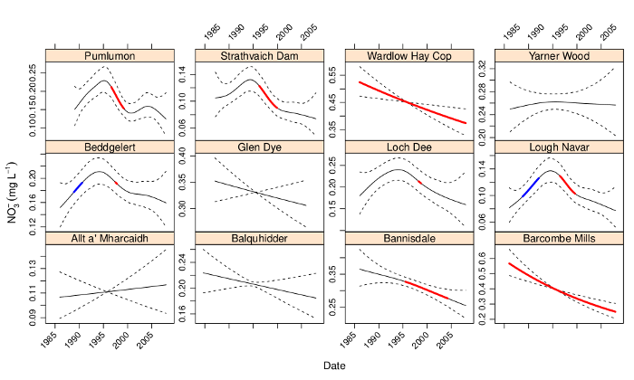
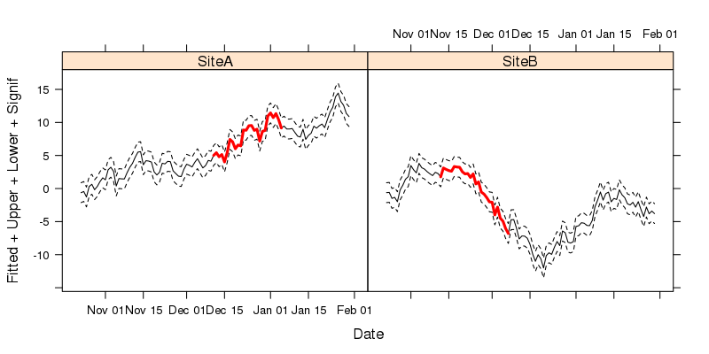
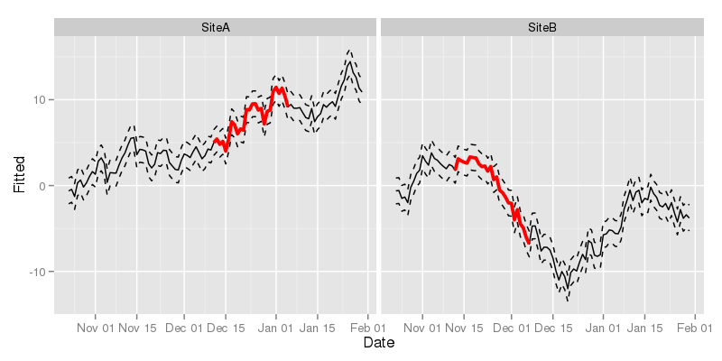

Time series plots in R
with lattice & ggplot
I recently coauthored a couple of papers on trends in environmental data (Curtis and Simpson, in press; Monteith et al., in press), which we estimated using GAMs. Both papers included plots like the one shown below wherein we show the estimated trend and associated point-wise 95% confidence interval, plus some other markings. The coloured sections show where the estimated trend is changing in a statistically significantly manner, i.e. where a 95% confidence interval on the first derivative (rate of change) of the trend does not include 0. That particular figure and the others in the papers were drawn using the lattice package (Sarkar, 2008), but I could just have easily used ggplot2 (Wickham, 2009) instead. I was recently asked via email how I produced the figures in the paper. Rather than just reply to that email, I thought I’d knock up a quick post for my blog to show how it was done.

For the purposes of this post, I’m not going to show how we fitted the time series models. Instead I’m just going to show some dummy data (two random walks) that illustrate how the data need to be arranged for the plotting code I’m going to use. To start then, create the dummy data we’ll use to draw some plots
set.seed(1)
tdat <- data.frame(Site = rep(paste0("Site", c("A","B")),
each = 100),
Date = rep(seq(Sys.Date(), by = "1 day", length = 100), 2),
Fitted = c(cumsum(rnorm(100)), cumsum(rnorm(100))),
Signif = rep(NA, 200))
tdat <- transform(tdat, Upper = Fitted + 1.5, Lower = Fitted - 1.5)
## select 1 region per Site as signif
take <- sample(10:70, 2)
take[2] <- take[2] + 100
tdat$Signif[take[1]:(take[1]+25)] <- tdat$Fitted[take[1]:(take[1]+25)]
tdat$Signif[take[2]:(take[2]+25)] <- tdat$Fitted[take[2]:(take[2]+25)]This results in the following data frame
R> head(tdat)
Site Date Fitted Signif Upper Lower
1 SiteA 2013-10-23 -0.6265 NA 0.8735 -2.1265
2 SiteA 2013-10-24 -0.4428 NA 1.0572 -1.9428
3 SiteA 2013-10-25 -1.2784 NA 0.2216 -2.7784
4 SiteA 2013-10-26 0.3168 NA 1.8168 -1.1832
5 SiteA 2013-10-27 0.6463 NA 2.1463 -0.8537
6 SiteA 2013-10-28 -0.1741 NA 1.3259 -1.6741
The first data.frame() call created the first four columns of tdat, where we have
Site, a factor variable indicating the two time series in the data,Date, a"Date"class vector which starts from today’s date and increase daily for the next 100 days, which we replicate twice, once perSite,Fitted, a numeric vector holding the trend estimates from the model.Here I just use two separate random walks, but for the papers we used the output from
predict()applied to the"gamm"classed model objectsSignif, another numeric vector that will contain the same values asFitted, but only for regions that are important or significant in some way. At first this is initialised withNAs.In the papers we had two variables,
IncreasingandDecreasing, which contained the values of the estimated trend (i.e. duplicatedFitted) where the trend was either increasing or decreasing significantly. The general principle is the same, however; the non-NAlocations will be indicated by a thicker line width and hence we duplicate theFittedvalues only for the sections that are interesting.
The transform() line just adds some dummy confidence intervals to data frame, creating variables Upper and Lower. In the papers these were approximate, point-wise 95% confidence intervals computing using the standard errors of the realizations from the estimated trend, as returned by predict() with argument se.fit = TRUE.
The last section in the code block just selects two random points within the interior of the each time series, which we then use to mark the start of the “interesting” period. This and the next 25 values in each time series are used as indices to copy into Signif the corresponding values from Fitted.
With that done, we can start plotting. I’ll show the lattice version first and then the ggplot one.
lattice version
Start by loading lattice
library("lattice")The key to creating the sort of plot shown in Figure 1 is to recognise that each of the lines we want to draw can be viewed as a separate y-axis variable. lattice allows for this by specifying multiple values on the left-hand-side of the formula used to describe the plot. We also need to facet the plot on Site. To draw the figure we use xyplot()
xyplot(Fitted + Upper + Lower + Signif ~ Date | Site,
data = tdat,
type = "l",
lty = c(1, 2, 2, 1),
lwd = c(1, 1, 1, 3),
col.line = c(rep("black",3), "red"))The formula used describes the plot: Fitted + Upper + Lower + Signif ~ Date | Site. The variables” we want to plot are all passed to the left-hand-side of the formula, with Date used to the right of ~, indicating the x-axis variable to be used. The last part of the formula indicates conditioning on Site and is what instructs xyplot() to facet the resulting plot into separate panels for each Site. The parameters lty, lwd, and col.line all control the aesthetics of the plot, and are specified in the order that the variables appear in the formula. Hence we use solid lines for Fitted and Signif and dashed (type 2) for the confidence intervals (Upper and Lower). In a departure from base graphics, it is the col.line argument that is used to specify the colours used for lines drawn in the panels.
The resulting figure is shown below

ggplot2
Now we move on to drawing the plot using ggplot2 Start by loading loading the package
library("ggplot2")With ggplot2 the key is to notice that each of the lines we want to draw on each panel can be drawn using different geom_line() layers, added sequentially to the plot. With each additional layer, we can override the default mapping by changing the y data in each layer using aes() within the geom_line() call. The code to create the plot is shown below.
ggplot(tdat, aes(x = Date, y = Fitted, group = Site)) +
geom_line() +
geom_line(mapping = aes(y = Upper), lty = "dashed") +
geom_line(mapping = aes(y = Lower), lty = "dashed") +
geom_line(mapping = aes(y = Signif), lwd = 1.3, colour = "red") +
facet_wrap( ~ Site)The first line sets up the basic ggplot object with a mapping and a data object, to which we add a geom_line() layer (line 2). Note that here we don’t specify any arguments to geom_line(), so it picks up defaults from the base object created in line 1. In lines 3 to 5 we add additional geom_line() layers, but now we need to override the mapping of variables to axes on the plot, which we do by updating the mapping. We only need to change the y data used for each layer; the x data are taken from the base object created in line 1. Notice how we specify attributes for these lines outside the aes() calls? This controls how each line is drawn. The final line in the code chunk uses facet_wrap() to split the data up by Site and draw a separate panel for each of Site.
The resulting figure is shown below

I don’t think any of this is particularly revelatory, but, as someone did ask me how it was done, hopefully some readers will find this useful. Happy plotting!